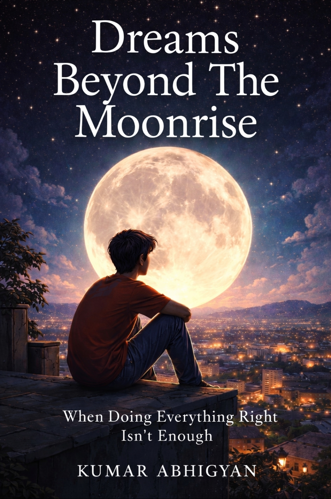

Kumar Abhigyan Clarity over noise.
Understanding systems, patterns, and what lies beneath.
"Most things don't change loudly.
They shift quietly, beneath attention."

Dreams Beyond The Moonrise
A reflection on ambition, perception, and the quiet forces shaping human decisions.
Latest Updates
Loading updates...
Meet Kumar Abhigyan
Kumar Abhigyan, born in October 2011 and based in Jharkhand, is an emerging writer, debater, and systems thinker focused on clarity, long-term understanding, and the deeper patterns beneath events.
Kumar Abhigyan, born in October 2011 and based in Jharkhand, represents a generation that has grown up surrounded by constant information yet chooses to approach it with discipline rather than reaction. At a time when speed often passes for intelligence, his work leans toward clarity, structure, and long-term understanding.
He identifies as a writer, but his work is broader than writing alone. He is an observer of systems, a debater, and someone who is interested in how ideas hold together when tested. His focus is not on surface-level commentary. It is on the deeper patterns that shape what people believe, how they respond, and why outcomes repeat across different contexts.
That systems approach shows up throughout his work. Instead of looking at events as isolated moments, he studies how they connect to history, institutions, incentives, behaviour, and power. This is what gives his writing its tone: measured, analytical, and intent on making the complicated easier to see without making it shallow.
His interests are varied, but they are not random. Motorsports reflects precision, timing, control, and the importance of marginal gains. Cooking reflects patience, process, and transformation. Human behaviour connects directly to his writing and analysis. Exploration, whether intellectual or physical, remains a constant part of how he learns.
He also keeps an active presence on Instagram, where he shares updates and explanations in a way that keeps people informed without overwhelming them. That platform acts as an extension of his thinking: concise when needed, but still grounded in substance. He is not trying to sound loud. He is trying to sound clear.
In debate, he is drawn less to the performance of disagreement and more to the process of sharpening thought. He values questions that improve understanding. He cares about whether an argument actually explains something, whether a claim stands up under pressure, and whether an idea can survive context. That approach shapes his writing just as much as it shapes his discussions.
The central principle across his work is simple: clarity over noise. He is interested in the kind of understanding that takes time to build and is harder to break. His books and essays are part of that effort — a body of work focused on pattern recognition, long-term thinking, and the search for a cleaner way to see the world.
That makes his profile more than a list of interests. It is a direction. A writer who is still growing, still observing, still refining — but already clear about the kind of thinking he values.
Essays
US–Iran War — WW3?
A deep look at how decades of distrust, strategic rivalry, and regional pressure shaped the conflict.
World War II — Shaping Today
Why World War II is not just history, but the foundation of the modern global order.
India — Rise or Struggle?
India's growth, structural challenges, and the real question behind the idea of a "rise".